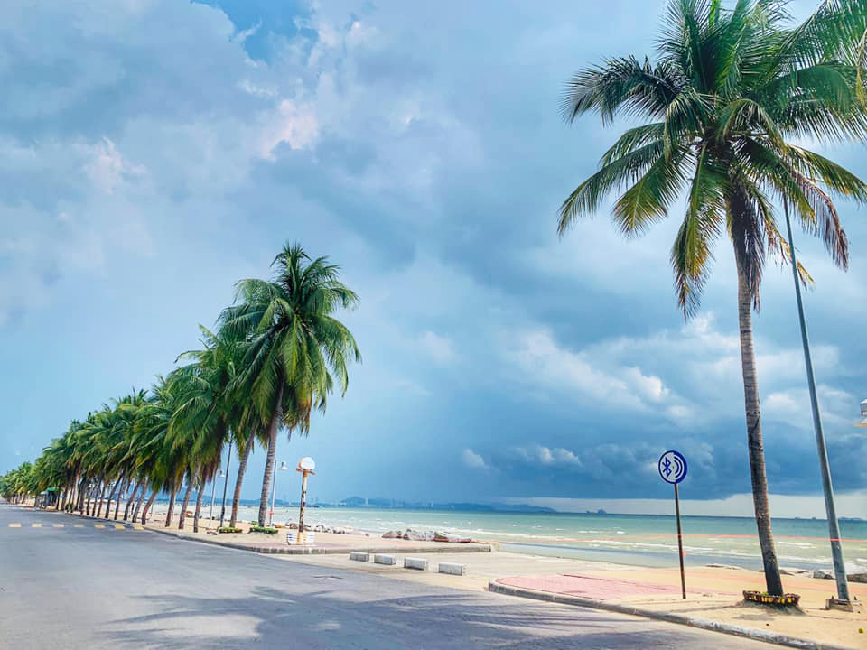
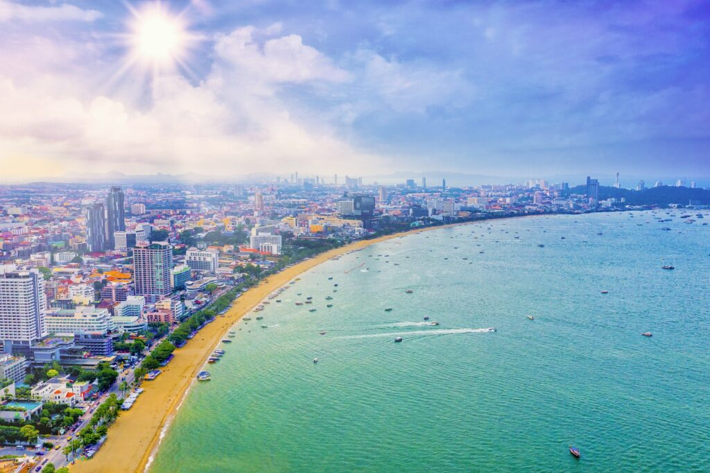
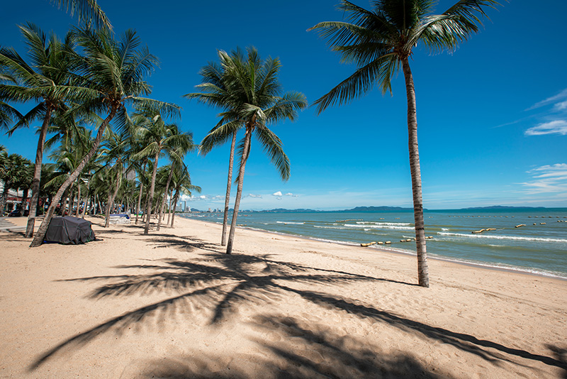

หาดบางแสน

ใครมาเที่ยวตัวเมืองชลบุรีแล้วไม่แวะ หาดบางแสน ก็เหมือนมาไม่ถึง เพราะที่นี่ถือเป็นหนึ่งในหาดชื่อดังของ จังหวัดชลบุรี เลยก็ว่าได้ค่ะ
หาดแห่งนี้มีตำนานความรักระหว่าง นายแสน และหญิงสาวชื่อ สามมุข แต่เพราะรักที่ไม่สมหวัง ทั้งคู่จึงจำใจกระโดดน้ำสละชีวิต
เลยกลายเป็นที่มาของชื่อสถานที่ท่องเที่ยวต่างๆ ในชลบุรี เช่น หาดบางแสน และ เขาสามมุข นั่นเอง
หาดพัทยา

หาดพัทยา เป็นชายหาดขนาดใหญ่ในชลบุรี มีความยาวถึง 3 กิโลเมตร และมีชื่อเสียงโด่งดังทั้งในบรรดานักท่องเที่ยวทั้งไทยและต่างประเทศ หลังจากที่มีการปรับปรุงและจัดระเบียบภูมิทัศน์
ชายหาดแห่งนี้ก็ดูสวยงามและเป็นระเบียบมากขึ้น เหมาะแก่การมาเล่นน้ำ
เดินหาดชิลๆ จากนั้นก็แวะเข้าไปช้อปปิ้ง และหาของอร่อยๆ ทานในตัวเมืองพัทยากันค่ะ
หาดจอมเทียน

ออกจากตัวเมืองพัทยาไปเพียง 4 กิโลเมตรก็จะถึง หาดจอมเทียน อีกหนึ่งหาดชื่อดังของจังหวัดชลบุรี ถ้าหาดพัทยาว่ากว้างแล้ว หาดจอมเทียน นั้นกว้างยิ่งกว่าอีกค่ะ
ด้วยความยาวกว่า 6 กิโลเมตร ทำให้ที่นี่เป็นแหล่งที่ตั้งของร้านอาหาร และกิจกรรมทางน้ำมากมาย ไม่ว่าจะเป็น บานาน่าโบ๊ท เจ็ทสกี วินด์เซิร์ฟ เรือใบ
หรือพาราเซลลิ่ง ก็ตาม